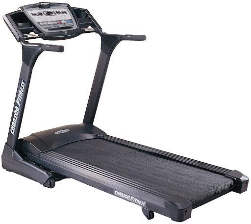
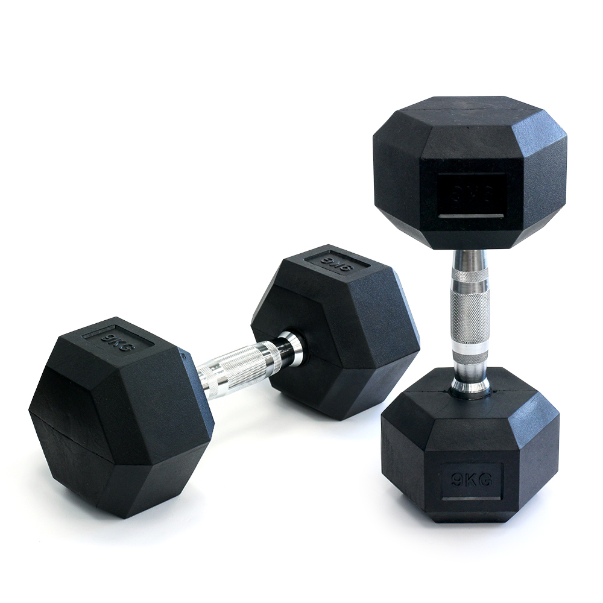
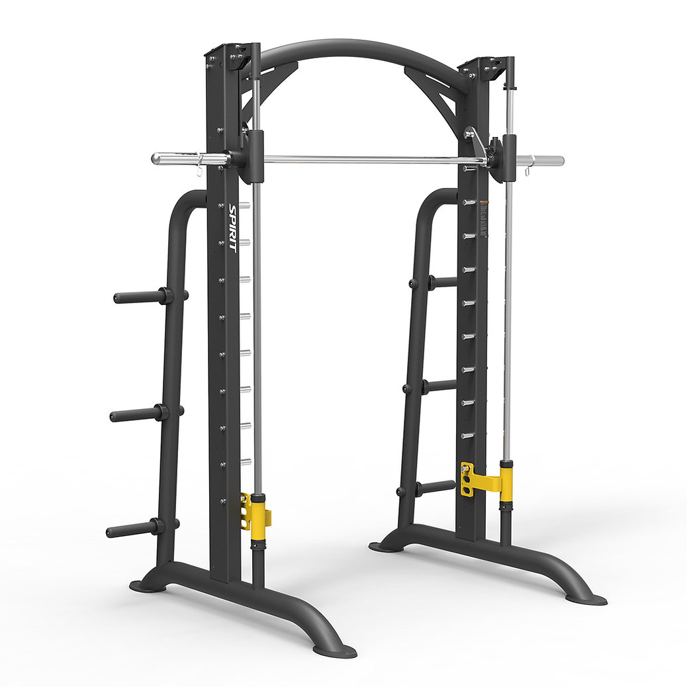
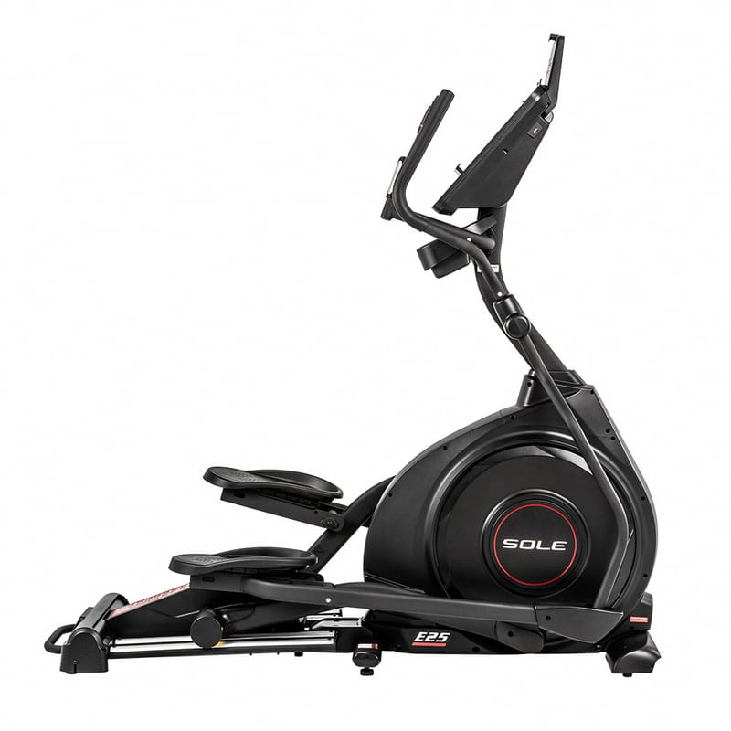
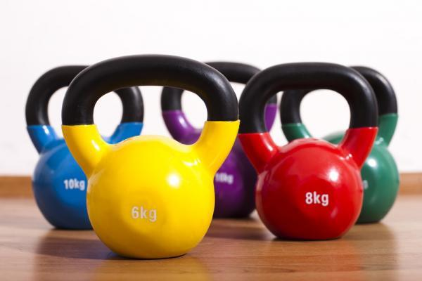
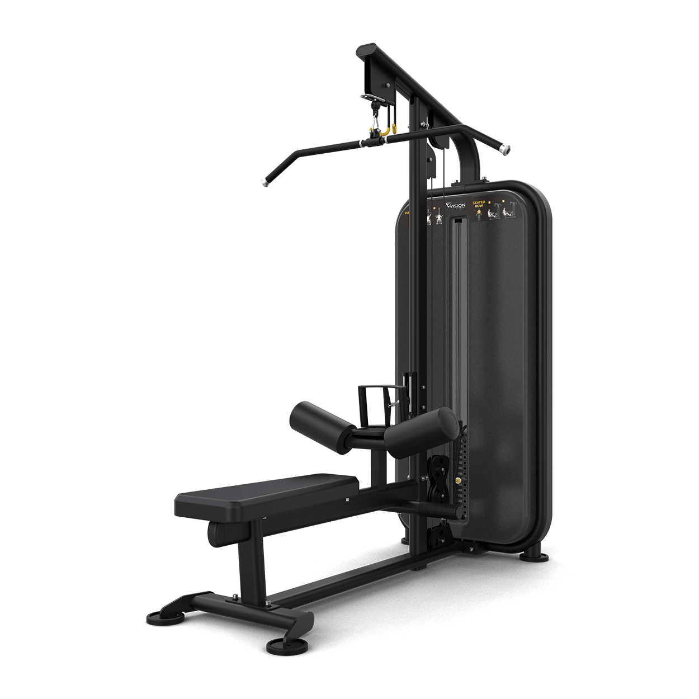

器材推薦

跑步機
跑步機是健身房常見的器材之一，適合進行心肺訓練，模擬跑步和快走。

啞鈴
啞鈴是力量訓練的基礎工具，可以有效鍛煉多個肌群，提升力量和耐力。

史密斯機
史密斯機是一種固定軌道的健身器材，主要用於舉重和力量訓練。特別適合初學者或需要減少自由重量訓練風險的人。

橢圓機
橢圓機是一種低衝擊的有氧器材，適合進行全身訓練，能有效提升心肺功能並減少關節壓力。

壺鈴
壺鈴是一種多功能的力量訓練器材，適合動態動作如擺盪、硬舉，能提升力量和核心穩定性。

拉背機
拉背機專為鍛煉背部肌群設計，能增強上半身力量並改善背部線條，是健身房必備器材。